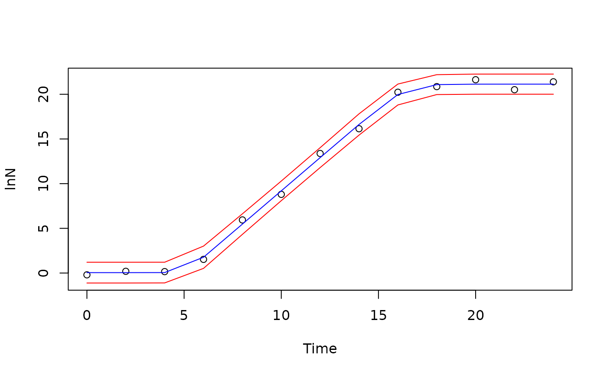

HuangFM function to fit the Huang full growth model to complete microbial growth curve.
Returns the model parameters estimated according to data collected in microbial growth experiments.
Arguments
- t
is a numeric vector indicating the time of the experiment
- Y0
is the natural logarithm of the initial microbial concentration (
ln(N0)) at time=0- Ymax
is the natural logarithm of the maximum concentration (
ln(Nmax)) reached by the microorganism- MUmax
is the maximum specific growth rate given in time units
- lag
is the duration of the lag phase in time units
Details
Model's inputs are:
t: time, assuming time zero as the beginning of the experiment.
Y(t): the natural logarithm of the microbial concentration (ln(N(t)) measured at time t.
Users should make sure that the microbial concentration input is entered in natural logarithm, Y(t) = ln(X(t)).
Author
Vasco Cadavez, vcadavez@ipb.pt and Ursula Gonzales-Barron, ubarron@ipb.pt
Examples
## Example: Huang full model
library(gslnls)
data(growthfull) # simulated data set.
initial_values <- list(Y0 = 0, Ymax = 22, MUmax = 1.7, lag = 5) # define the initial values
## Call the fitting function
fit <- gsl_nls(lnN ~ HuangFM(Time, Y0, Ymax, MUmax, lag),
data = growthfull,
start = initial_values
)
summary(fit)
#>
#> Formula: lnN ~ HuangFM(Time, Y0, Ymax, MUmax, lag)
#>
#> Parameters:
#> Estimate Std. Error t value Pr(>|t|)
#> Y0 0.04562 0.25768 0.177 0.863
#> Ymax 21.13232 0.22393 94.372 8.54e-15 ***
#> MUmax 1.85942 0.06076 30.601 2.08e-10 ***
#> lag 5.07987 0.25000 20.320 7.89e-09 ***
#> ---
#> Signif. codes: 0 ‘***’ 0.001 ‘**’ 0.01 ‘*’ 0.05 ‘.’ 0.1 ‘ ’ 1
#>
#> Residual standard error: 0.4444 on 9 degrees of freedom
#>
#> Number of iterations to convergence: 9
#> Achieved convergence tolerance: 1.11e-15
#>
confint(fit)
#> 2.5 % 97.5 %
#> Y0 -0.5372882 0.6285361
#> Ymax 20.6257592 21.6388712
#> MUmax 1.7219672 1.9968814
#> lag 4.5143282 5.6454031
preds <- data.frame(predict(fit, interval = "prediction", level = 0.95))
plot(lnN ~ Time, data = growthfull, ylim = c(-1, 22))
lines(growthfull$Time, preds$fit, col = "blue")
lines(growthfull$Time, preds$upr, col = "red")
lines(growthfull$Time, preds$lwr, col = "red")
